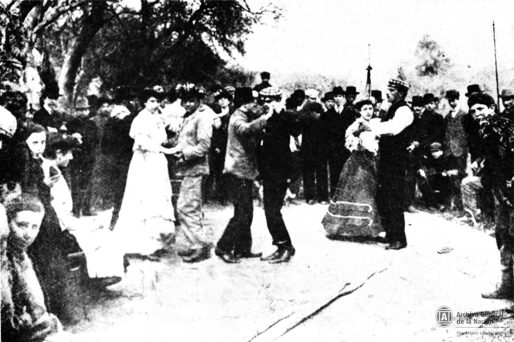
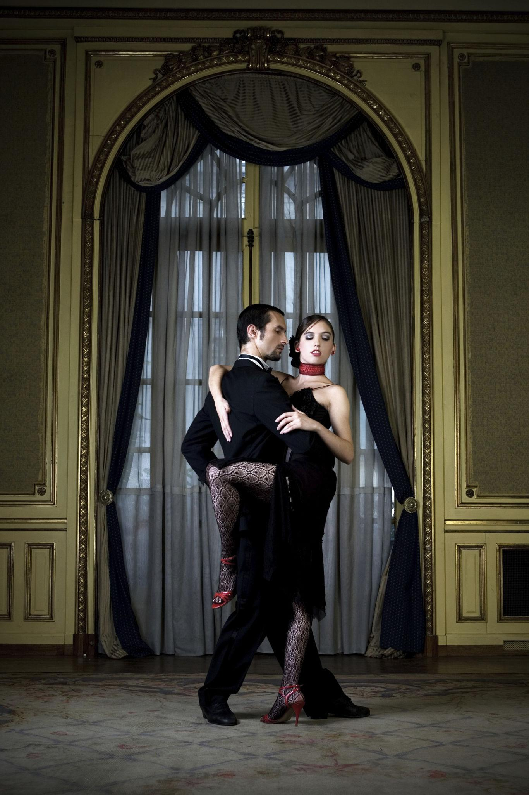
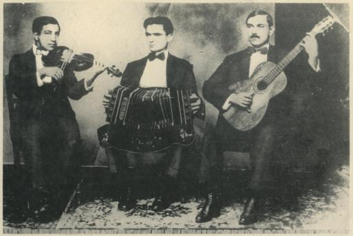
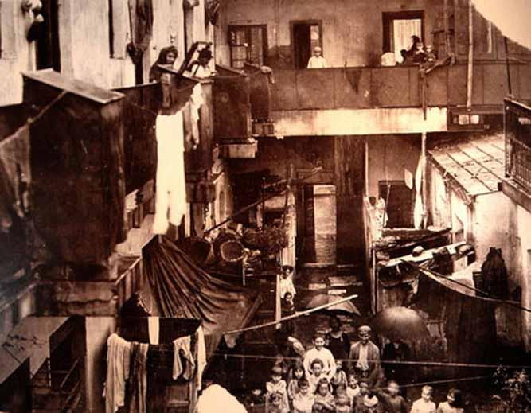
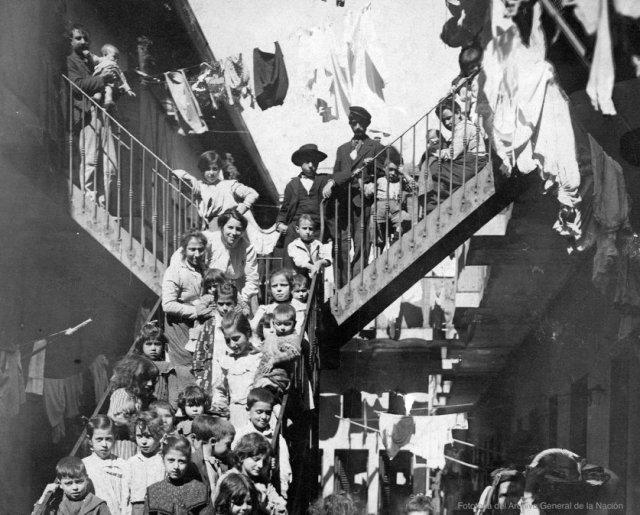
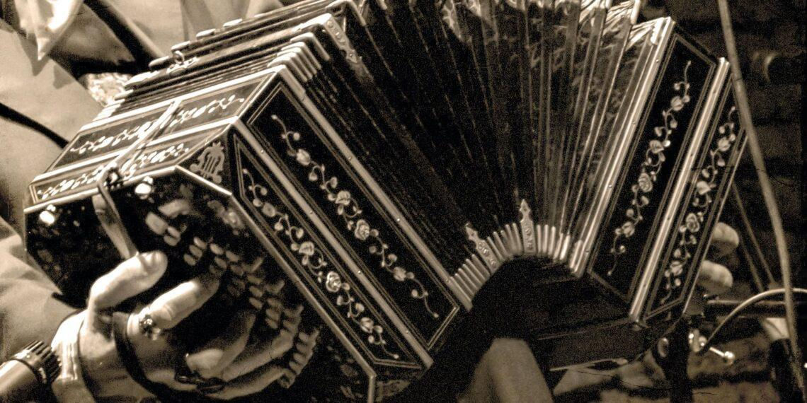

Buenos Aires, turn of the 20th century — where tango begins
You don’t enter a ballroom.
You enter a room that wasn’t meant for dancing.
The floor is uneven. The walls close. Air hangs thick with smoke, sweat, and the residue of too many people sharing too little space. This is the edge of Buenos Aires—dockside neighborhoods, immigrant housing, places built quickly and never finished.
Men outnumber women. Not slightly—overwhelmingly.
The sound
It starts with a pull—reedy, almost mournful.
The Bandoneón exhales into the room, its sound both intimate and distant at once. A violin follows, then a piano if there’s space for one.
The rhythm isn’t clean. It drags slightly, then snaps forward. You can’t relax into it.
That tension is the point.
The bodies
When people dance, they don’t separate.
They close in.
Chest to chest. Breath shared. Movement contained, almost restrained—until it isn’t.
Steps are small, precise, negotiated in real time. There’s no fixed pattern yet. It’s improvisation built on proximity.
You realize quickly:
This isn’t performance. It’s communication.
The social pressure underneath
This isn’t just a dance. It’s a response.
Men far from home
Cultures colliding—Italian, Spanish, African, local Argentine
Limited space, limited opportunity
The dance becomes a language where words don’t work.
There’s competition—but not the kind you saw in Harlem.
Here it’s quieter, more controlled:
Who gets to dance
Who gets noticed
Who is left watching
Every movement carries intention.
The women
When women enter the room, everything shifts.
Not dramatically—just enough to change the balance.
They choose more than it seems.
A glance. A pause. A decision not to stand.The entire room adjusts around those small signals.
The feeling of it
If you expected something romantic, you’re early.
This version of tango is:
Close
Slightly tense
Grounded in the body, not the spectacle
There’s no audience separate from the dancers. Everyone is inside it.
What’s forming
You don’t know it yet, but this will travel.
From these rooms to:
Cafés
Dance halls
Eventually to Paris, where it will be stylized, refined, and exported back to the world
But here, now, it’s still:
Improvised, local, and a little bit rough
The underlying sensation
The music pulls. The bodies respond. The room compresses everything—sound, movement, intention—into something tight and immediate.
It doesn’t try to impress you.
It makes you adjust to it.
If you want, the next step is powerful: the same tango arriving in Paris—cleaner, more theatrical, slightly removed from this origin. That contrast tells the whole story of how culture transforms.